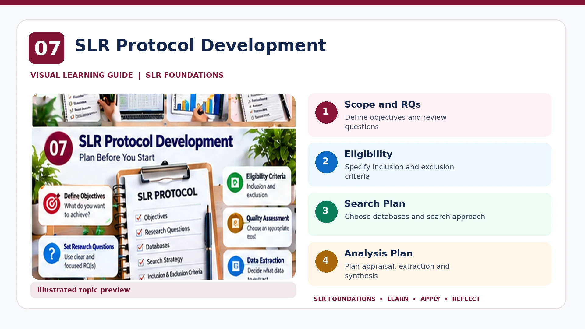

SLR FOUNDATIONS · PRE-HANDS-ON LEARNING
SLR Protocol Development
Plan the review decisions before conducting the main search.

What belongs in a review protocol?
| Component | What to document |
|---|---|
| Rationale and scope | Why the review is necessary, target population, context and outcomes. |
| Research questions | Clear answerable questions; PICOC or another suitable framework where helpful. |
| Search plan | Databases, concepts, synonyms, search strings, dates and supplementary searching. |
| Eligibility | Inclusion and exclusion criteria with a rationale. |
| Screening | How records are deduplicated, screened and disagreements resolved. |
| Appraisal | Appropriate risk-of-bias or quality assessment, if applicable. |
| Extraction and synthesis | Variables, extraction process and intended synthesis methods. |
| Changes | Protocol amendments with dates and explanations. |
Important distinction
PRISMA 2020 is primarily reporting guidance, not a protocol-development method. Where applicable, consult PRISMA-P for systematic review protocol reporting. Registration requirements depend on the review type and registry eligibility.